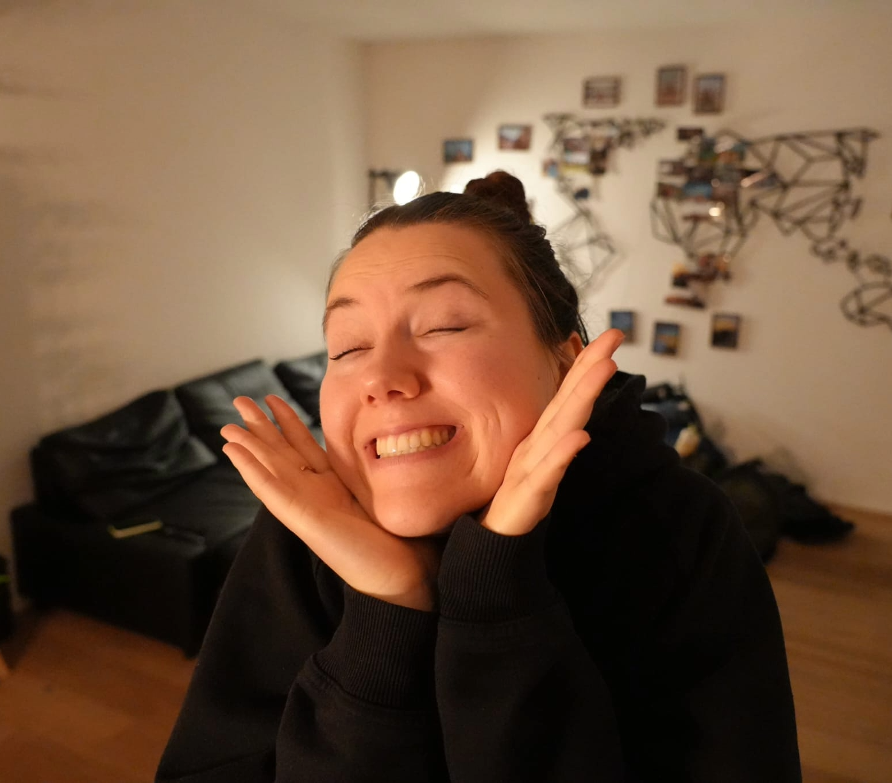

ABOUT ME
Hi, I'm Johanna.
I'm a photographer based in Switzerland, passionate about capturing landscapes, wildlife and the people I meet along the way.
Photography allows me to slow down, explore new places and capture moments that would otherwise disappear.
MY PHOTOGRAPHY
Exploring the world through photography.
From dramatic mountain landscapes to wildlife and everyday moments, I enjoy looking for unique perspectives and natural light.
My goal is simple: create photographs that make you want to stop for a moment and look.
Landscape
Mountains, coastlines, forests and everything in between.
Animals
Wildlife and animals encountered during my travels.
People
Natural portraits and moments with the people around me.